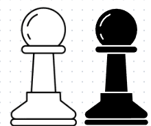
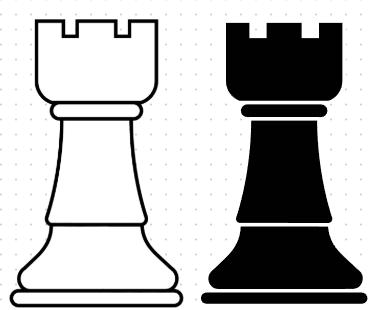
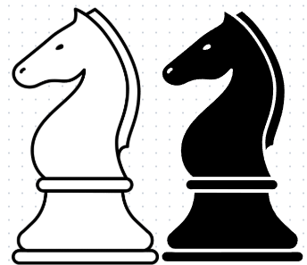
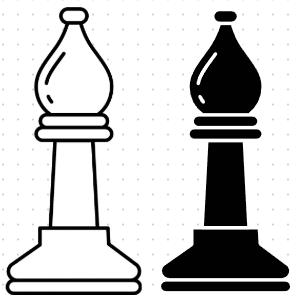
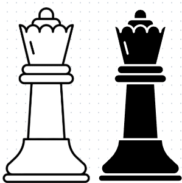
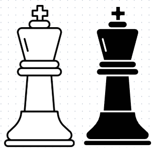

KCW's Chess Hub
Chess, A new trend and a great friend!
Chess, A new trend and a great friend!
This project is a part of a chess chatbot and a pairing software, aimed at providing an interactive and educational platform for learning chess. It covers everything from the basics of each chess piece to strategies like tactics and endgame principles. Designed to help beginners and chess hobbyists, the site offers structured content and curated resources to improve your skills. This is an additional resource that can be used along with the chatbot designed for you.
Good luck! to you 👍
The game is played in an 8x8 grid with 32 pieces, 16 for each white and black. White will make the first move.
Learn how pawns move in chess
Discover the rook movements.
Master the unique movement of the knights.
Utilize bishops effectively on open diagonals.
Understand the versatility and strength of the queen.
Learn how the King moves in chess.
Achieving checkmate is the ultimate goal. Learn how.
Avoid stalemates and use them when in trouble.
Learn the fundamentals of rook checkmates.
Learn how and when to promote your pawns.
Protect your king and develop your rook simultaneously.
Understanding when to capture and when to hold.
Set up for success with strong opening principles.
Transition from opening to planning and execution.
Refine your play for the final phase of the game.